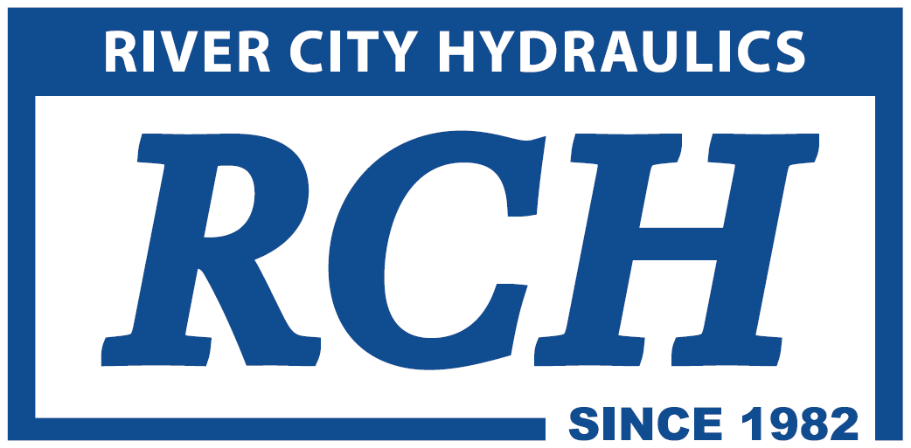

Choose a day
Monday schedule displayed
Recommended for:
City Managers, Administrators, Clerks, Treasurers, Finance Officers, and Elected Officials.
Recommended for:
Public Works Directors, Utility Managers, Superintendents, Foremen, and Crew Leaders.
Recommended for:
Operators, Technicians, Inspectors, Equipment Operators, Maintenance Staff, and Field Crew Members.
October 12, 2026
7:00 AM–9:30 AM
SetupHeavy Equipment Move-InVendor Hall
Heavy equipment arrival and placement in preparation for the Expo.
7:30 AM–6:30 PM
SetupVendor Hall SetupVendor Hall
Vendor registration, booth setup, equipment placement, and preparation of the Vendor Hall.
3:00 PM–5:00 PM
RegistrationPre-RegistrationStride Bank Center
Early attendee check-in and registration material pickup.
4:00 PM–7:30 PM
Networking / Special EventCornhole TournamentStride Bank CenterSponsored by:
Sewer Expo cornhole tournament and networking event.
October 13, 2026
7:00 AM–8:00 AM
RegistrationNo speaker · Location TBD
Attendee check-in, badge pickup, and conference registration.
8:00 AM–8:15 AM
Priority SessionWelcome, Introduction, and DEQ Credit InformationWilliam Sheppard · 1st Floor
Opening remarks and information about receiving and documenting DEQ credits.
8:15 AM–9:15 AM
Priority SessionKeynote AddressLeo Flowers · 1st Floor

Leo Flowers is an internationally touring comedian, keynote speaker, and host of a suicide prevention podcast with nearly one million downloads.
Originally from Chicago, Leo earned his master's degree in counseling before launching a comedy career that has taken him around the world—from comedy clubs and cruise ships to military bases overseas and corporate conferences. He's appeared on FOX, NBC, MTV, E!, Comedy Central, and has performed at the Montreal Comedy Festival.
What makes Leo unique is his ability to combine humor with practical insights about stress, resilience, connection, and purpose. Whether he's on stage making people laugh or helping people navigate life's toughest moments, his goal is the same: to leave people better than he found them.
9:15 AM–10:15 AM
Vendor BreakVendor Hall Grand Opening
Dedicated time to visit exhibitors, explore equipment and services, and speak with industry representatives.
9:45 AM–10:35 AM
Bonus sessions for the 12-hour DEQ credit track.
MLUMNavigating Infrastructure Funding: A Comprehensive Overview of Financing Options for Public UtilitiesCharles de Coune and Jared Cooper · 2nd Floor
An overview of funding opportunities available to public utilities, including general obligation bonds, revenue bonds, public-private partnerships, tax increment financing, government loans, direct bank loans, BUILD Act funding, and other financing options.
FOCondition-Based Maintenance for Sanitary Sewer Systems: Why Clean a Clean Sewer Line?Walt Woodard · 4th Floor
Learn how acoustic inspection technology can rapidly assess sanitary sewer lines. A complete inspection can be performed in approximately 80 seconds, helping utilities direct cleaning and maintenance resources where they are most needed.
10:20 AM–10:40 AM
Priority SessionQuestions All Public Works Should KnowSean McKelvey and Kyle Waid · 1st Floor
Description to be provided.
10:40 AM–11:30 AM
Priority SessionOMAG PEPARE for the FIGHTSean McKelvey · 1st Floor
Description to be provided.
11:30 AM–12:30 PM
LUNCHLunch in the Vendor Hall
Lunch will be served in the Vendor Hall, providing attendees additional time to visit exhibitors and network with other municipal professionals.
12:45 PM–1:35 PM
Vendor DemoUMMLFOCIPP DemonstrationVortex Companies · Vendor Hall
This training is designed to introduce supervisors and municipal administrators to trenchless pipe rehabilitation methods, specifically focusing on Cured-in-Place Pipe (CIPP) point repair applications.
Vendor DemoUMMLFOHydro Excavation DemonstrationRCH / Sewer Equipment Company · Vendor Hall

Whether your organization currently owns a hydro excavator or is evaluating the technology, attendees will leave with a better understanding of why hydro excavation has become one of the fastest-growing segments of the municipal utility industry and how it can improve safety, efficiency, and long-term infrastructure management.
UMFOWhat Is NASSCO PACP All About?Bryan Ballard · 4th Floor
An explanation of NASSCO, its mission, and the development of the Pipeline Assessment Certification Program. The session will address PACP training, inspection purposes, how PACP data is used, and who may benefit from obtaining certification.
UMMLBringing Industry 4.0 to Water Plants SCADASteve Montgomery · 2nd Floor
A discussion of modern SCADA technology, automation, connectivity, real-time monitoring, and Industry 4.0 applications for water and wastewater facilities.
1:40 PM–2:20 PM
Vendor BreakVendor Hall Break
Dedicated time for attendees to visit vendors, view products, and speak with exhibitors before afternoon sessions begin.
2:20 PM–3:10 PM
FOUMHow to Create an EPA-Compliant FOG ProgramTony Cole · 2nd Floor
Description to be provided.
MLUMCapital Improvement Planning for Small SystemsA.J. Barney · 1st Floor
An introduction to capital improvement planning for small utility systems. Attendees will learn the basic components of a capital improvement plan and practical tools that can be used to begin developing one.
FOUMPrinciples and Practices of Tracer Wire: Completing the SystemAndrew Moseley · 4th Floor
Learn the fundamentals of proper tracer wire installation and maintenance. This demonstration covers common installation mistakes, industry best practices, and how proper grounding and access points improve locate accuracy and help prevent utility damage.
3:20 PM–4:10 PM
Priority SessionThe Top 10 Ways to Lose a Sewer ClaimLeslie Noriega, Sean McKelvey, and William Sheppard · 1st Floor
This informative and practical session explores the Top 10 Ways to Lose a Sewer Claim—and, more importantly, what municipalities can do to avoid them.
A successful defense often begins long before a sewer overflow occurs. Attendees will learn why thorough documentation of work orders, call-outs, inspections, routine maintenance, and system response activities is critical when a claim arises. The session will highlight common documentation gaps and operational practices that can make an otherwise defensible claim much more difficult.
Using real-world lessons and practical examples, this session will give attendees actionable strategies they can take back to their organizations to improve documentation, communication, and overall claims preparedness.
4:10 PM–4:30 PM
Closing Remarks and Raffle Prize Announcements1st Floor
End-of-day announcements, reminders, and the presentation of selected raffle prizes.
6:00 PM–9:00 PM
Networking / Special EventCasino NightStride Bank Center - Vendor hallSponsored by:
Evening networking and entertainment event for Sewer Expo attendees.
October 14, 2026
7:00 AM–8:00 AM
Registration / Vendor Hall OpenStride Bank Center Lobby - Vendor Hall
Attendee check-in, badge pickup, and assistance with conference registration.
7:00 AM–8:00 AM
Breakfast / Leadership NetworkingMLCity Manager and Public Works Director BreakfastWilliam Sheppard, Hunter Askew, and Sean McKelvey · 2nd/4th FloorSponsored by:
Join public works directors, city managers, administrators, and other municipal leaders for a networking breakfast focused on emerging trends, shared challenges, and innovative ideas. Connect with peers, exchange best practices, and discover strategies to help Oklahoma cities and towns succeed.
8:00 AM–8:15 AM
Priority SessionWelcome and Morning AnnouncementsHunter Askew · 1st Floor
Opening remarks, schedule information, and announcements for the second day of the Expo.
8:20 AM–9:10 AM
Priority SessionWHAT LIES BENEATH – See the Pipe. Make the Call. Live With the Consequences.William Sheppard and Hunter Askew · 1st Floor
Think you know a bad sewer line when you see one? What Lies Beneath puts you and your table in the decision-maker's seat. Together, you'll review real sewer CCTV footage, assess what you see, and decide what action — if any — you would take.
But there's a catch: you can't fix everything. With limited resources, your team will have to weigh pipe condition, risk, cost, and competing priorities. Along the way, you'll hear from real claimants who experienced sewer overflows firsthand and see how decisions made underground can have very real consequences above ground.
Come ready to debate your table, defend your decisions, and make the call.
9:20 AM–10:10 AM
MLUMBuilding Stronger Communities Through Education, Standards, and PartnershipBrian Smith, PhD · 2nd Floor
Join Brian Smith, PhD, as he introduces the United States Fat, Oil and Grease Alliance (USFOGA) and its mission to strengthen collaboration between municipalities, facility operators, and service providers through education, professional standards, and industry best practices. Attendees will gain practical insights into emerging FOG management challenges, opportunities for stronger public-private partnerships, and the resources USFOGA is developing to help communities improve compliance, reduce risk, and enhance operational performance.
UMFONext-Generation Public Works Is Powered by ArcGISGreg Hakman · 4th Floor
This session explores how GIS can help public works organizations modernize operations, improve decision-making, and respond to aging infrastructure, funding, resilience, and service-delivery challenges. Case studies will show how ArcGIS integrates AI, real-time data, drones, IoT, and digital twins.
UMRecord Keeping for the Future, Your Successor Will Thank YouCurtis Richards · 1st Floor
Record keeping is a commonly overlooked or underrated task, yet neglecting it can cause major headaches down the road. Regulatory requirements are an important reason to maintain accurate records, but they are not the only one. Good record keeping supports daily operations, improves troubleshooting, preserves institutional knowledge, and strengthens long-term planning.
10:10 AM–10:40 AM
Vendor BreakVendor Hall Break
Dedicated time to visit exhibitors, view equipment and services, and speak with industry representatives.
10:40 AM–11:30 AM
UMMLThe Trouble with Troubleshooting and Predictive Maintenance: Don't Get Caught Without ItJohn Curry · 1st Floor
A discussion of best management practices for predictive maintenance and how storing operational information in a historian can assist with troubleshooting and tort claim issues.
FOUMFrom Storm Event to Action: Pinpointing I&I Without Drowning in DataMark LaPlante · 2nd Floor
Learn how systemwide screening and targeted confirmation work together in an effective inflow and infiltration (I&I) program. This session will explore how to interpret wet-weather response patterns, prioritize field investigations, and use remote monitoring and automated reporting to improve efficiency while reducing unnecessary field exposure.
FOUMAir Valves 101. The different types, operations and maintenance.Andrew Moseley · 4th Floor
Learn why air valves are critical to the performance and reliability of force mains and lift stations. This session covers proper operation, routine maintenance, common issues, and practical strategies to improve pumping efficiency and extend system life.
11:30 AM–12:30 PM
Lunch / AwardsLunch in the Vendor Hall
Lunch will be served in the Vendor Hall, providing attendees time to visit exhibitors and network with other attendees.
12:45 PM–1:35 PM
Vendor DemoUMMLFOWork Smarter Underground: How AI Is Changing the Future of Sewer InspectionITpipes · Vendor Hall
As municipalities navigate aging infrastructure, tightening budgets, and growing regulatory pressures, artificial intelligence is emerging as a transformative tool for sewer condition assessment. This presentation explores how AI streamlines defect recognition, improves coding accuracy, and accelerates decision-making while preserving the critical role of human oversight. Attendees will leave with practical insight into how AI integration can help their organization shift from reactive to proactive infrastructure management and maximize the value of every inspection.
Vendor DemoUMMLFOJetter NozzlesKEG · Vendor Hall
Description to be provided.
FOUMUnited Point Repair™: Advancing Sectional Sewer Rehabilitation with Engineered Composite RepairsSean Fuller · 2nd Floor
An overview of an internally installed composite repair solution engineered to permanently restore structurally compromised pipe segments while minimizing disruption to surrounding communities.
FOUMBuild a Better Manhole ChimneyJason Jones · 4th Floor
A discussion of lightweight, watertight, non-corrosive, traffic-rated composite manhole covers, HDPE grade rings, and Sentry vents designed to provide ventilation while reducing inflow.
FOUMStop Guessing Your Cleaning Schedule: How One Operator Used Level Data to Rewrite the CalendarJeremiah Mancini · 1st Floor
The City of Bellevue swapped its calendar-based sewer cleaning schedule for intervals measured line by line using non-contact radar level sensors to determine when the network was starting to block again. The result: lines significantly reduced the number of cleans, freeing up the crew and reducing needless wear on sound pipe. This session shows operators a practical method for building a cleaning schedule they can defend with data.
1:40 PM–2:20 PM
Vendor BreakVendor Hall Break
Final dedicated vendor-engagement period before the afternoon educational sessions and demonstrations.
2:20 PM–3:10 PM
MLUMLong Term PlanningJeremy McBride · 1st Floor
Our team will present the Choctaw Nation's new Asset Management Tool, Oka Vlhpisa, a resource designed to assist rural utilities in improving infrastructure planning, asset tracking, maintenance scheduling, and long-term capital planning.
MLUMInvesting in A Clean Water Future: Leveraging the CWSRF for Nature-Based SolutionsEmerson O'Donnell · 2nd Floor
This presentation will introduce nature-based solutions and green infrastructure as strategies to provide wastewater services, and highlight the Clean Water State Revolving Fund (CWSRF) as an affordable financing option for these approaches. We will cover why debt-financing major infrastructure investments is appropriate, and include information on how nature-based solutions are incentivized through the CWSRF.
FOUMStopping Roots Before They Stop the System: A Modern Approach to Sewer Infrastructure ProtectionBrian Conroy · 4th Floor
Learn how proactive chemical root control can reduce root intrusion, sanitary sewer overflows, maintenance costs, and infrastructure deterioration. This session explains why roots return after mechanical cutting and how preventative treatment programs provide longer-lasting results.
3:20 PM–4:10 PM
UMMLIdentifying Practical, Scalable Solutions to Maximize the Long-Term Value of Limited ResourcesDavid Jett · 1st Floor
Learn how the City of Tulsa combines modern technologies with proven maintenance practices to address aging sanitary sewer infrastructure. The session will also explain how smaller municipalities can adapt these strategies to their own systems and budgets.
UMUsing SCADA to Improve Monitoring and Management of Water and Wastewater SystemsBlair Girard · 4th Floor
Discover how SCADA can improve utility operations through better monitoring, instrumentation, and decision-making. This session covers system capabilities, implementation considerations, costs, common pitfalls, and emerging technologies that are shaping the future of utility management.
FOUMGet the F.R.O.G. OutDrew Raffensperger · 2nd Floor
Learn about the most common types of root intrusion and grease buildup that impact sanitary sewer systems. This session will explain how these problems develop, the operational challenges they create, and practical strategies for prevention, maintenance, and long-term control.
4:10 PM–4:30 PM
Priority SessionClosing Remarks / Raffle PrizesWilliam Sheppard and Hunter Askew · 1st Floor
Final remarks, event wrap-up, and closing announcements for the 2026 OMAG Sanitary Sewer Expo.
Sponsors & Vendors
Thank you to the sponsors and vendors supporting the 2026 OMAG Sanitary Sewer Expo. Select any card below for more information about each company.
Platinum Sponsors

Ace Pipe Cleaning, Inc.
acepipe.com
Sewer & Storm Sewer Condition Assessment (MSI/Sonar/Lidar), cleaning and rehab (CIPP/UV lining, Epoxy) services.

Duke's Root Control
www.dukes.com
Duke’s provides underground infrastructure services and root control to municipalities, utilities, and engineering firms with maintenance solutions for wastewater, stormwater, water supply systems, natural gas, electrical, and telecommunications systems.

Lonestar Municipal Equipment, LLC
lonestarmunicipalequipment.com
We are a dealer of vacuum trucks and trailers, combo trucks, CCTV inspection equipment, nozzles, and more


Gold Sponsors


Eastech Flow Controls, Inc.
www.smartwastewater.com
Eastech Flow Controls designs, manufactures, and supports wastewater monitoring systems, including ultrasonic level and flow instrumentation, cloud-based data collection, wireless telemetry, and software for sewer system evaluation. We also provide installation support, technical training, data analysis, inflow and infiltration (I/I) studies, and engineering support services.

ITpipes
www.itpipes.com
ITpipes is a leading provider of intelligent pipeline inspection and management solutions, empowering municipalities, utilities, and contractors to transform inspection data into actionable intelligence. ITpipes continues to build on decades of expertise in underground infrastructure and software development and today serves hundreds of clients across North America.
Comprehensive Solutions for Pipeline Management
ITpipes offers a full suite of tools to manage the entire lifecycle of pipeline condition assessment and asset management:
SmartVision is a complete solution that seamlessly connects field operations and office workflows for effective pipeline inspection and asset management. Built to streamline every stage of the inspection process, SmartVision delivers unmatched flexibility, performance, and insight.
Designed to work with all major CCTV inspection hardware, SmartVision enables crews in the field to easily capture detailed inspection data, while office teams access real-time updates, interactive mapping, and powerful reporting tools that simplify review, QA, and planning.
SmartVision integrates effortlessly with leading asset management systems, enabling smooth work order management and synchronized infrastructure updates. As an Esri Gold Partner solution, it also provides deep GIS integration, leveraging spatial data to drive smarter decisions and long-term planning.
FieldVision is a rugged, field-optimized inspection software that allows crews to conduct compliant CCTV inspections. Designed for speed and accuracy, it works seamlessly with all major CCTV camera systems and integrates directly with GIS mapping in the field.
CoreVision delivers powerful, browser-based access to real-time inspection data. With dynamic data query and color-coded mapping, CoreVision enables users to filter, report, and visualize inspection results instantly, improving decision-making and enabling proactive pipe management.
AiDetect blends artificial intelligence with human expertise to automate defect coding at 97% accuracy. This accelerates workflows, increases consistency, and allows organizations to shift from reactive to proactive infrastructure management.
Driving Industry Transformation
ITpipes isn’t just inspection software, it’s a full pipeline management platform. The system integrates easily with major asset management and GIS platforms such as Esri, Trimble Cityworks, OpenGov EAM (formerly Cartegraph), Infor, Lucity, Novotx, Tyler Tech and more. By connecting inspection data directly to capital planning, maintenance prioritization, and regulatory reporting, ITpipes enables smarter infrastructure decisions.
The result? Reduced emergency repairs, optimized resource allocation, and extended asset life. ITpipes empowers agencies to plan confidently for the next 50 to 100 years, not just respond to today's issues.
From the field to the boardroom, ITpipes helps infrastructure owners manage underground assets with confidence, clarity, and foresight.

Midwest Infrastructure Coatings
www.midwestinfrastructurecoatings.com
We offer environmentally sound, cure-in-place technologies for a wide variety of structures, surfaces, mechanical requirements and operating conditions. Our high-quality flexible liner systems are a cost-effective, no-dig alternative to the replacement of water, sewer, wastewater, holding systems, manholes, vaults and other components. Our proven systems remediate infiltration and exfiltration, making operations more cost effective now and for decades to come. Let us show you how we can help your budget do more and go further.
Vortex Companies
vortexcompanies.com
Vortex Companies is a leading provider of advanced trenchless water and sewer technologies. Through its products and services divisions, Vortex delivers a comprehensive suite of rehabilitation products, equipment, services, and field support to the municipal, industrial, and commercial marketplaces. This includes pipe and manhole lining systems; sewer robotics; mortars; epoxies and resin materials; installation equipment; contracting services, training, and field support. Operating globally, Vortex is focused on providing customers a broad range of industry leading, cost-effective trenchless solutions and technical expertise, best suited for their project needs.
Silver Sponsors

Core and Main
www.coreandmain.com
wastewater flow and level monitoring. I and I studies and evaluations.

Kirby-Smith Machinery, Inc.
www.kirby-smith.com
Kirby-Smith Machinery, Inc. was established in 1983 and is recognized as one of the premier new and used heavy construction equipment and crane dealers in the country. Kirby-Smith Machinery and its hundreds of dedicated professional employees are committed to providing reliable new and used equipment for sale and equipment rentals, as well as responsive service and equipment parts for multiple makes and models. Kirby-Smith Machinery has 14 branch locations in Oklahoma, Texas, Kansas and Missouri. For more information about Kirby-Smith Machinery, call 888-861-0219 or visit kirby-smith.com.

Luckinbill Construction Company
www.luckinbillconstructionco.com
CCTV Inspection Sewer Line Maintenance

McCain Waterworks
www.mccainww.com
Mfg. Rep for Composite Manhole Covers, Grade Rings, Syneco Odor Control

McIntire Management Group
mmgonline.net
Education on AWWA standards, specifications and product application.

OKAC LLC
www.okallianceconsultants.com
We offer a wide range of professional water and wastewater management consulting services to systems across the United States across public, private and tribal sectors. Creating an alliance between ourselves, our customers, state, federal and industry partners when adjusting to regulatory change. In the field, our team utilized in-depth, hands-on knowledge and experience of regulatory change to provide best management practices as solutions for achieving system sustainability. Rather than offering services that are "one size fits all," we build solutions that service each customers' individual needs.

Vendors

AJG Equipment Sales & Service
Sewer Cleaning Equipment, Nozzles, Wireless handsfree headsets, Sewer Tooling and accessories.

Axiom Instrumentation Services
www.axiominst.com
Instrumentation: Pressure, Temperature, Level, Flow, and Analytics

Blackmon Mooring BMS CAT
www.bmscat.com
Services
Water Damage Restoration
Mold Remediation & Removal
Fire Damage Restoration
Cooling Tower Cleaning
HVAC Cleaning and Decontamination
Drying & Dehumidification
Biohazard Cleanup
BMP Compliance Software
www.bmpcomp.com
BMP Compliance Group is a leading water compliance software company with over 35 years of experience in the water & wastewater sector. BMP is dedicated to helping municipalities and utilities simplify and modernize environmental compliance. We specialize in developing innovative, cloud-based solutions for FOG (Fats, Oils, and Grease) management, Industrial Pretreatment, and Backflow Prevention programs. With a 99% retention rate—our clients’ loyalty speaks volumes more than we ever could about our products and service.

Choctaw Nation - Sustainable Communities
www.choctawnation.com/about/eps/water-resource-management/sustainable-communities
Choctaw - Capital Improvement Planning, Technical Assistance, Operator Training


Cogent Companies
cogentcompanies.com
Provider of process equipment, pumps, controls, instrumentation and electrical gear for the Municipal and Commercial Water and Wastewater markets and We are here to serve all your rental needs with one call. Backed by one of the industry’s largest pump manufacturers, we are the Godwin distributors for dewatering and bypass solutions.

Communities Unlimited
communitiesu.org
Communities Unlimited connects rural Americans to solutions that sustain healthy businesses, healthy communities, and healthy lives. We believe that access to opportunities should not depend on where you live, how much you have in the bank, or what you look like.
We take a holistic approach to economic development combining human connection with technology and expertise to foster self-reliance and economic impact for people and communities through 5 main program areas.
This is where we live. This is where we work. These are our communities. We work side by side with individuals, communities and organizations to create economic resilience in the America’s rural South.
Communities Unlimited, Inc. is a 501(c)3 nonprofit corporation founded in 1976 that connects people to solutions through human connections. Through ingenuity combined with cutting-edge technology and expertise building healthy businesses, healthy communities, healthy food systems, healthy bank accounts and healthy lives.


eLynx Water Solutions
WATER.ELYNXTECH.COM
eLynx provides secure cloud-based monitoring and SCADA solutions for water and wastewater systems. The self-install eLynxConnect unit provides a cost effective immediate solution for municipalities to monitor critical infrastructure. This device offers flexible, temporary monitoring at lift stations and remote sites where permanent infrastructure, reliable communications, or staffing resources may be limited. Utility operators improve operational efficiency with text message alarms and secure remote mobile visibility into system performance. Built on more than 25 years of industry experience, and based in Tulsa, Oklahoma, eLynx helps utility teams across the US modernize their operations and become more efficient. Visit our booth to see how cities are simplifying utility monitoring with eLynx.


Esri
www.esri.com
Esri is the global leader in Geographic Information System (GIS) technology, offering a comprehensive suite of products and services designed to empower organizations with spatial insights. Our core offerings include the ArcGIS platform, which provides tools for mapping, spatial analysis, and data management through solutions such as ArcGIS Online, ArcGIS Pro, ArcGIS Enterprise, and a range of mobile and web applications. Esri also delivers professional GIS consulting, implementation services, training, and technical support to help organizations optimize their use of GIS. Specialized industry solutions, spatial analytics, AI tools, and access to global datasets further enhance Esri’s capabilities. Additionally, Esri provides APIs and SDKs for developers to build custom GIS applications and integrate spatial functionality into other platforms. Through these products and services, Esri enables organizations to solve complex problems, make data-driven decisions, and visualize information geographically.

Ferguson Water Works
www.ferguson.com
Pipe, Fittings, Technology, Meters, Hydrants, if it touches water we sell it.

FirstStep Pavement Management
firststeppavement.com
Data collection scan of pavement and asset management services of cities and counties.


Hammerhead Trenchless
www.hammerheadtrenchless.com
Trenchless Point Repair, CIPP Lining, Pipe Bursting

Hope Automation
hopeautomation.com
SCADA and control panesl remote access telemetry system wastewater plants
Hydrovac-Supply
www.hydrovac-supply.com
Hydrovac and Jetting Parts, Tooling and Accessories

ICM of America, Inc., Oklahoma City Branch
www.improvedconstructionmethods.com
ICM offers Sales, Service and Rental of Sewer Maintenance Equipment, including Pipe Inspection Cameras, Jetter Nozzles and Hose, Confined Space Equipment, including Gas Detectors, Blowers, and Fall Protection Systems for manhole entry, Trench Safety Equipment, Traffic Safety Equipment, GPS Mapping and Line Location Equipment, Trash Pumps, and Manhole Lid Pooks.

Indepth Utility Solutions
www.indepthutilitysolutions.com
Indepth Utility Solutions offers products designed to cover a broad spectrum of underground utility locating needs. We are proud to represent Vivax-Metrotech in Texas and Oklahoma for your utility line locator, in-line camera inspection equipment, and pipeline defect mapping needs.
We also offer Sewerin's full line of water and gas leak detection instruments to the states of Texas, Oklahoma, Arkansas and Louisiana. We carry manhole and confined space inspection camera equipment from RinnoVision as well. All of our equipment is top of line and backed by training, support and our local service center.

J&R Equipment
www.jandrequipment.com
Environmental Equipment, rental equipment, and a service department in OKC and a future site in Tulsa OK

Mayer Specialty Services
mayerllc.com
Pipe Lining, CCTV Inspection (PACP/MACP/LACP Certified), Pipe Cleaning, Sewer System Maintenance, Pigging, New sewer acceptance testing, Manhole Rehabilitation ( Cementitious, Polyurethane, and Epoxy), Trenchless point repairs.

Mid-American Research Chemical
marc1.com
MARC is a specialty chemical manufacturing company that strives to produce innovative, environmentally responsible, economical and quality maintenance products with superior customer service.

Oklahoma Rural Water Association (ORWA)
orwa.org
Training and technical assistance to water and wastewater operators across the state.

Oklahoma Water Resources Board
oklahoma.gov/owrb.html
Financial assistance for water and wastewater infrastructure

Ritz Safety
www.RitzSafety.com
Ritz Safety specialize in Safety Products. Specialize in Confined Space equipment, Respiratory, Gas Detection, FR Clothing, Safety Boots, Safety Glasses, Hi-Viz apparel, Hard hats, Flashlights and other related Safety PPE products


SewerAI
www.sewerai.com
Hi, we’re SewerAI. We enable utilities, engineers, and contractors to focus on what’s important: identifying issues rapidly to prioritize fixes and maximize performance. We leverage AI to give an accurate picture of sewer collection systems as a whole. While tech fuels the data we collect, SewerAI was built to make you superhuman. A user-friendly platform and responsive customer service enable your team to get supercharged results—ensuring a healthy future for our cities.

Southwest Environmental Finance Center
swefc.unm.edu/home
Technical assistance and training provider


The RootX Company
rootx.com
For over 30 years RootX has been providing chemical solutions for root intrusion and microbial solutions for grease buildup in sanitary sewer systems.

The Strong Company
www.strongseal.com
Technology Leader in Manhole and Pipe Rehabilitation.

US F.O.G. Alliance
usfoga.com
US F.O.G. Alliance is a non-profit organization for professionals who handle and manage food grade fats, oils, and grease. We are comprised of industry professionals throughout the United States. We welcome a wide range of individuals with various expertise to our alliance. Our mission is to educate and equip all people in an effort to mitigate the destructive effect of F.O.G. has on our public sewer systems and clean water.


Waste Connections of Oklahoma, Inc
www.wasteconnections.com
Solid waste collection, transfer and disposal services.
WaterNow
waternow.org
Assistance with Funding Applications, focused on Nature-based Solutions